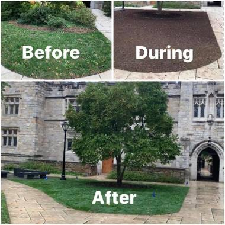
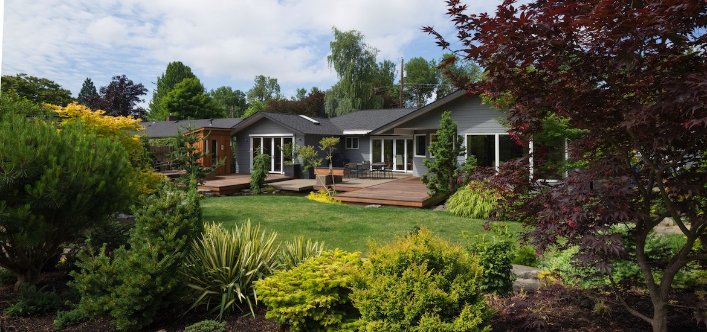
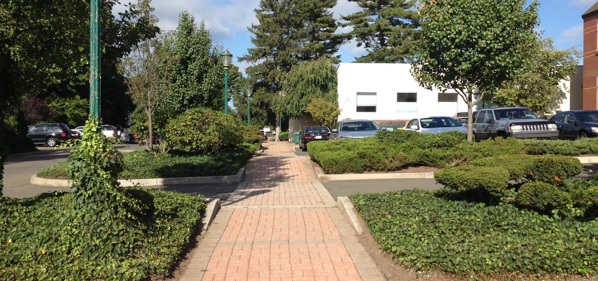
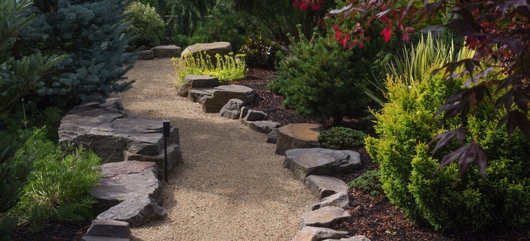
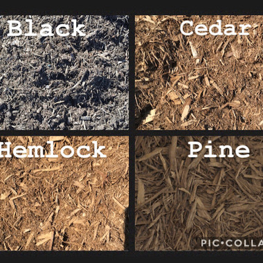

ACA Landscaping delivers the absolute best in commercial & residential landscaping — hardscaping, maintenance, plantings, and snow management — to businesses, universities, condos, and municipalities across Connecticut.
Located in Branford, ACA Landscaping delivers services to commercial businesses, universities, condos, and municipalities across Connecticut — providing the absolute best in landscaping services each and every day.
Retaining walls, brick paver patios, walkways, natural stonework, and drainage solutions built to last for decades.
Learn More →
Top-notch, environmentally friendly lawn care plus tree and shrub programs — backed by a satisfaction guarantee.
Learn More →
High-quality, affordable plantings designed around your style — from formal beds to flowing flowers and shade trees.
Learn More →
All-inclusive commercial maintenance, parking-lot care, and 24/7 snow & ice management for properties of all sizes.
Learn More →
Seasonal clean ups that prepare your lawn, beds, and trees for the growing season and the Connecticut winter.
Learn More →
Bulk mulch, stone, and topsoil for sale — commercial & residential, with delivery available throughout the area.
Learn More →There are many good landscape companies around. Here's why our customers stay with us.
More often than not, contractors are hard to reach. Not us — you can reach us by phone (Vince's cell) as well as email.
We do what we say we will do. Customizable maintenance programs and sophisticated scheduling software keep us organized and on time.
Founded by Vincent Cacace, we've earned hundreds of satisfied customers — and have cared for Yale University's landscaping for over 15 years.
Proudly serving commercial & residential clients throughout the Connecticut shoreline